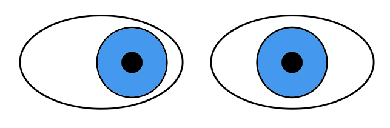

☰
Cerebral Ocular Motor Disorders
Spasm of the Near Reflex

What is it?
Diplopia and esotropia caused by inappropriate activation of convergence, miosis, and accommodation (“synkinetic near triad”)
Usually episodic but may be sustained
Common causes: anxiety or malingering
Uncommon cause: idiopathic
Often triggers major caregiver concern that a dire neurologic condition has developed
What does it look like?
Core clinical features
Diplopia or blurred vision for distant objects
Comitant esotropia for distance fixation
Eyes aligned for near fixation
Episodic convergence movements
Episodic miosis (may be difficult to see)
Episodic accommodation (only in patients under age 50)
Possible accompanying clinical features
Volitional flutter eye movements
Blepharospasm
Staggering gait
Tip:
these manifestations are difficult to sustain for long periods
Imaging features
No abnormalities
What else looks like it?
Decompensated esophoria
Accommodative esotropia
Esotropia of high myopia
Sixth nerve palsy
Thalamic infarct, hemorrhage, tumor (“thalamic esotropia,” “pseudoabducens palsy”), but manifestations are never intermittent
Pontine dysfunction, but in that condition, convergence is a substitution for markedly impaired horizontal gaze
Ocular dysmetria
Ocular flutter/opsoclonus
Nystagmus
What should you do?
Tip:
look for the characteristic undulating horizontal gaze movements evoked by intrusion of convergence on conjugate horizontal gaze
Try to detect miosis timed with intrusion of convergence movements
In young patients, see if retinoscopy will disclose a myopic shift of accommodation (“pseudomyopia”) timed with convergence movements
Test ocular ductions by covering one eye at a time, expecting to evoke horizontal movements of normal amplitude
Expect accompanying volitional flutter and/or blepharospasm
What will happen?
Monocular occlusion or cycloplegia may relieve the spasm, but these approaches are often not effective
Psychotherapy or sedative medication may help
Condition may resolve spontaneously
Trap:
eye muscle surgery (bimedial rectus recessions) may lead to exotropia
Cerebral Ocular Motor Disorders
Congenital Ocular Motor Apraxia
Acquired Ocular Motor Apraxia
Acute Cerebral Horizontal Gaze Deviation
Spasm of the Near Reflex